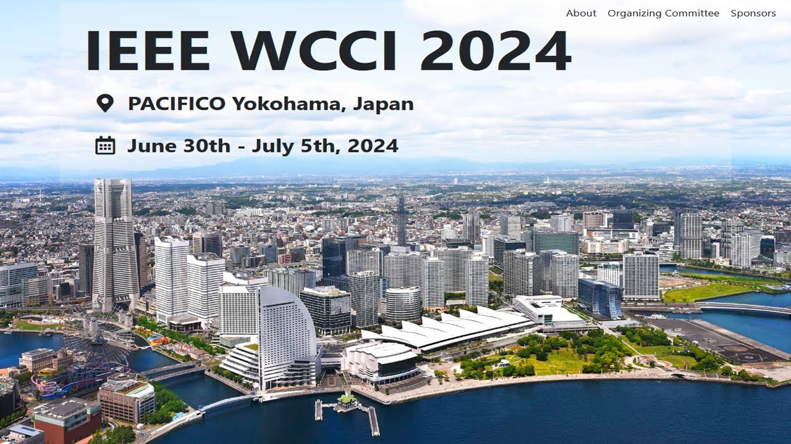
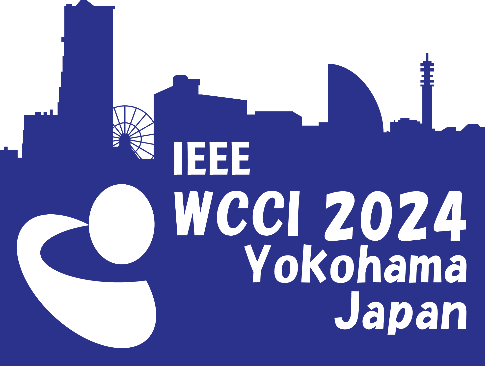

| Overview | Topics | Important Days | Paper Submission | Organizers |
Papers for IEEE WCCI 2024 should be submitted electronically through the Congress submission portal, and will be refereed by experts in the fields and ranked based on the criteria of originality, significance, quality and clarity.
Please follow the IEEE WCCI 2024 Submission Website (https://2024.ieeewcci.org/) to prepare and submit the paper. Special session papers are treated the same as regular conference papers. All papers accepted and presented at IEEE WCCI 2024 will be included in the conference proceedings published by IEEE Explore. To submit your papers to the special session, please select this Special Session name in the Main Research topic

